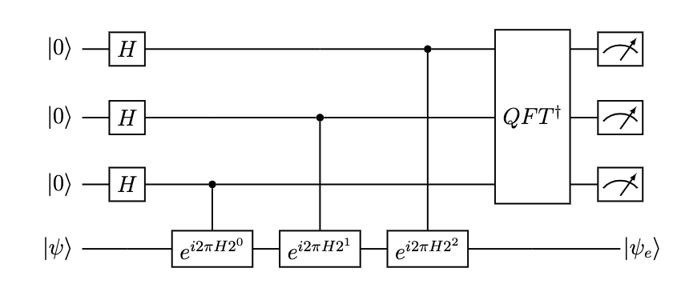

from itertools import product
from tangelo.linq import Circuit, Gate, get_backend
sim = get_backend()
cx = Circuit([Gate("", , control=[])])
# Run through combinations of all states and print the result
for states in product(["0", "1"], repeat=1):
f, _ = sim.simulate(Circuit([Gate("X", i+1) for i, state in enumerate(states) if state == "1"])+cx)
print(f"The ancilla in the {states[0]} state returns the frequencies {f}")Fault Tolerant Building blocks
Before you jump in
This hands-on notebook complements existing tutorials, documentation and the developer notes available in the Tangelo GitHub repositories, which present content in much more depth.
You will come across code cells that require you to change code or fill in the blanks in order to achieve a desired outcome. There may be many ways to solve these small exercises, and you are encouraged to explore.
In order to complete this hands-on tutorial, we recommend you install the latest version of Tangelo. If you encounter errors related to missing Python packages (classical chemistry backend, quantum circuit simulator…), you can install them on-the-fly by typing !pip install <package-name> in a new code cell, and then restart the Jupyter notebook kernel.
Have fun !
For this hands-on, the following resources you can rely on to complete the hands-on are: - the first part of this tutorial notebook on linq, about gates and circuits. - the documentation for the Gate (here) and Circuit (here) classes.
Hands-On
Unlike NISQ algorithms which utilize short circuits and many measurements, fault-tolerant algorithms use long circuits and few measurements. The quantum computer can efficiently store large (exponential) systems efficiently but preparing these states is time-consuming and we generally don’t need all the information about the state.
1. Controlled Operations
A main component of fault-tolerant algorithms is controlled operations. These are defined such that operations given a state of a certain (set of) qubit(s), one can apply an operation to a different set of qubits. For example, the usual CNOT (CX) Gate applies X to the target qubit only if the first qubit is in the \(\big|1\big>\) state. This can be written as
\(CX\big|0\big>\big|s\big>=\big|0\big>\big|s\big>, \quad CX\big|1\big>\big|s\big>=\big|1\big>X\big|s\big>\)
where \(s\) is any state \(a\big|0\big> + b\big|1\big>\).
Likewise, this can be generalized to multiple controlled operations.
For example, if we want to apply an operation U only when the first 2-qubits are in state 1. We can define
\(U^{01}\big|11\big>\big|s\big>=\big|11\big>U\big|s\big>\)
In general the operation can be controlled on many qubits and the state \(s\) can be many qubits.
Q: Can you fill in the blanks in the cell below, to run the algorithm for a controlled-X gate. Remember that in Tangelo, the “C” in front of a gate dictates that a controlled operation is requested
Can you apply the operation controlled on qubits 1 and 2, such that the first qubit flips to state “1” only if qubits 1 and and 2 are in state “1”
sim = get_backend()
ccx = Circuit([Gate("", , control=[, ])])
for states in product(["0", "1"], repeat=2):
f, _ = sim.simulate(Circuit([Gate("X", i+1) for i, state in enumerate(states) if state == "1"])+ccx)
print(states, f)Now we can combine the operations which will only flip the state if the second and third qubits are in the state “10”
for states in product(["0", "1"], repeat=2):
f, _ = sim.simulate(Circuit([Gate("X", i+1) for i, state in enumerate(states) if state == "1"]) + ccx + cx)
print(states, f)In general, we can make more complicated controlled unitaries. One of the key fault-tolerant algorithms is phase-estimation. Which can approximate the eigenvalues of a state using a series of controlled operations follewed by a Quantum Fourier Transform.
2. Quantum Phase Estimation
The first fault-tolerant algorithm we will implement in phase-estimation. It is a technique to obtain the energy of an (approximate) eigenstate by a series of controlled time-evolutions of a Hamiltonian. The circuit is shown below

from openfermion import get_sparse_operator
import numpy as np
from tangelo import SecondQuantizedMolecule
from tangelo.linq import get_backend, Circuit, Gate
from tangelo.toolboxes.qubit_mappings.mapping_transform import fermion_to_qubit_mapping
from tangelo.toolboxes.qubit_mappings.statevector_mapping import get_reference_circuit
# Define H2 molecule in minimal basis set
xyz_H2 = [("H", (0., 0., 0.)), ("H", (0., 0., 0.7414))]
mol_H2_sto3g = SecondQuantizedMolecule(xyz_H2, q=0, spin=0, basis="sto-3g")
mol = mol_H2_sto3g
# Qubit operator representing H2 in a minimal basis
qu_op = fermion_to_qubit_mapping(mol.fermionic_hamiltonian, mapping="JW", n_spinorbitals=mol.n_active_sos, n_electrons=mol.n_active_electrons, spin=mol.spin, up_then_down=False)
# Cheat to get the ground state eigenvalue to be 0.25. The exact ground state energy is 1.137270174660903
qu_op += (0.25 + 1.137270174660903)
eigs, statevectors = np.linalg.eigh(get_sparse_operator(qu_op).toarray())
ground_sv = statevectors[:, 0]
first_sv = statevectors[:, 13] # due to the Jordan-Wigner mapping being used, there are many states that have the wrong number of electrons so 13 is the first excited state with 2 electrons# Hartree-Fock reference state circuit
hf_circuit = get_reference_circuit(n_spinorbitals=mol.n_active_sos, n_electrons=mol.n_active_electrons, mapping="JW",
up_then_down=False, spin=mol.spin)
sim = get_backend("cirq")
f, hf_sv = sim.simulate(hf_circuit, return_statevector=True)
g_ovlp = np.dot(hf_sv, ground_sv)
f_ovlp = np.dot(hf_sv, first_sv)
print(f"The overlap of the initial (Hartree-Fock) state with the exact ground state is {g_ovlp}")
print(f"The overlap of the initial (Hartree-Fock) state with the exact first excited state is {f_ovlp}")Q: Can you fill in the blanks in the cell below, to run the algorithm. You may need to change the parameters used in the Trotter-Suzuki (trotterize) operation to obtain accurate enough time-evolution to get a good result.
from tangelo.toolboxes.ansatz_generator.ansatz_utils import trotterize, get_qft_circuit
from tangelo.toolboxes.post_processing.histogram import Histogram
# Reverse order as cirq uses lsq_first
qubit_list = [6, 5, 4]
# State preparation
pe_circuit = hf_circuit + Circuit([Gate("H", q) for q in qubit_list ])
for i, qubit in enumerate(qubit_list):
# You can play around with how accurate the time-evolution needs to be
# Use negative time as trotterize uses exp(-iHt) to follow the Schrodinger equation
pe_circuit += trotterize(qu_op, trotter_order=, n_trotter_steps=, time=, control=qubit)
# set inverse to true or false
pe_circuit += get_qft_circuit(qubit_list, inverse=True)
sim = get_backend("cirq")
freqs, _ = sim.simulate(pe_circuit)
# Remove qubit indices from histogram corresponding to the state qubits i.e. (0, 1, 2, 3)
hist = Histogram(freqs)
hist.remove_qubit_indices(0, 1, 2, 3)
for key, probability in hist.frequencies.items():
energy = sum(int(k)/2**(i+1) for i, k in enumerate(key))
print(f"The measurement {key} with probability {probability:3.5f} converts to an energy={energy} ")As desired, the most probable result was “010” with energy 0.25. We can run the circuit agains specifying this is the result we want and then examine the statevector that results.
desired_measurement = "010"
pe_plus_measure = pe_circuit + Circuit([Gate("MEASURE", i) for i in qubit_list])
_, sv_new = sim.simulate(pe_plus_measure, desired_meas_result=desired_measurement, return_statevector=True)
print(f"The probability of this measurement is {pe_plus_measure.success_probabilities[desired_measurement]}")
# Shrink vector down to 2**4 size to compare with exact ground state.
sv_new_post = np.reshape(sv_new, (2**4, 2**3))[:, int(desired_measurement, base=2)]
print(f"The final state overlap with the ground state is {np.abs(np.dot(sv_new_post, ground_sv))}")We can see that we measured the desired energy with probability 0.987 and the resulting state has overlap with the exact state of 0.99997 while it started with an overlap of 0.9936. We not only measured the energy of an eigenstate, we also created the eigenstate on the simulator. This eigenstate can then be used to perform other tasks!
3. Block encodings.
Another building block of many fault-tolerant algorithms is block encodings. This is a technique to implement any operation as long as it can be decomposed into a linear combination of Unitaries. We can implement the operation using \(U_{prep}\) and \(U_{select}\) defined for a general operator \(A=\sum_i c_i U_i\) where \(U_i\) are unitaries.
\(U_{prep}\big|\psi\big>\big|0\big> = \sum_{i}\sqrt{|c_i|/\alpha}\big|\psi\big>\big|i\big>\)
\(U_{select}\big|\psi\big>\big|i\big> = U_i\big|\psi\big>\big|i\big>\)
where \(\alpha\) is the 1-norm of the coefficients \(|c_i|\)
Applying the circuit \(U_{prep}U_{select}U_{prep}^{\dagger}\) results in \(A\big|\psi\big>\big|0\big> + \sum_i \big|\psi^{\perp}\big>\big|i\big>\) where \(\psi^{\perp}\) are states orthogonal to \(A\psi\). This means that if we measure the ancilla qubits and the result is zero, we have successfully applied the desired operation \(A\).
For example, let’s try to apply \(A=\frac{1}{\sqrt{2}}X+\frac{1}{\sqrt{2}}Y\) which is equivalent to \(\left[\begin{array}{cc}0&1/2-1/2\\ 1/2+i/2&0\end{array}\right]\)
Q: Can you fill in the blanks in the cell below, to apply the operation A defined as a linear combination of unitaries \(X\) and \(Y\).
from tangelo.toolboxes.operators import QubitOperator
from tangelo.linq.helpers.circuits.statevector import StateVector
coefs = [1/np.sqrt(2), 1/np.sqrt(2)]
a = QubitOperator("X0", coefs[0]) + QubitOperator("Y0", coefs[1])
vec = np.array(np.abs(coefs))
vec = np.sqrt(vec/np.sum(vec))
# In this case prep can be be applied by simply applying the Hadamard gate to the first qubit
uprep = Circuit([Gate("H", 1)])
sv = StateVector(vec)
uprep = sv.initializing_circuit()
uprep.reindex_qubits([1])
# Qubit 1 is the register with coefficients [1/sqrt(2), 1/sqrt(2)]
cy1 = [Gate("", target=, control=[])]
# Sandwiching with "X" gates flips the control bit such that operation is controled on state "0"
cx0 = [Gate("X", 1), Gate("", target=, control=[]), Gate("X", 1)]
# Uselect
uselect = Circuit(cx0 + cy1)
sim = get_backend("cirq")
# We will use this as a state prep circuit. You can change this to any set of operations on qubit 0
state_prep = Circuit([Gate("RY", 0, parameter=np.pi/4)])
_, init_state = sim.simulate(state_prep, return_statevector=True)
block_circuit = uprep + uselect + uprep.inverse()
circuit = state_prep + block_circuit + Circuit([Gate("MEASURE", 1)])
desired_measurement = "0"
f, sv = sim.simulate(circuit, desired_meas_result=desired_measurement, return_statevector=True)
final_state = sv.reshape(2,2)[:,int(desired_measurement, base=2)]
print(f"The success probability of the operation was {circuit.success_probabilities['0']}")final_exact = get_sparse_operator(a).toarray() @ init_state
final_exact /= np.linalg.norm(final_exact)
print(f"The overlap of the exact with the block encoded application of A is {np.abs(np.vdot(final_state, final_exact))}")As you can see, we successfully applied the operation \(A\) when the measurement on the ancilla (qubit 1) is “0”.
4. Amplitude Amplification
We would like to have a higher probability of success. This is the main point of grover search where \(\sqrt{N}\) amplifications of the desired “good” state is required to increase the probability by \(N\). Hence, the quadratic speed up. To implement this we need to apply signed operations.
\(F_{good} F_{full}\)
In this case, the “good” subspace is all zeros on the ancilla qubits and the full state is the application of the block encoding.
where \(F_{good} = (1-\big|0\big>^{ancilla}\big<0\big|^{ancilla})\) and \(F_{full} = (1-A\big|\psi\big>\big<\psi\big|A)\)
Q: Can you fill in the blanks in the cell below to define the appropriate qubits and operation that the sign flip operations are applied to.
In order to facilitate amplitude amplification, we are going to make the 1-norm of the operator 2 such that the success probability is 0.25. The operator being applied is \((I - I + X + Y)/\sqrt{2}\). After amplification, the operator will be applied with 100% probability.
from tangelo.toolboxes.circuits.lcu import sign_flip, get_uprep_uselect
uprep, uselect, state_qubits, ancilla_qubits, alpha = get_uprep_uselect(a, make_alpha_eq_2=True)
def flip_on_state(qubits: list, circuit: Circuit):
return circuit.inverse() + sign_flip(qubits) + circuit
block_circuit = uprep + uselect + uprep.inverse()
full_circuit = state_prep + block_circuit
# Fill in this section
amplifying_circuit = flip_on_state(, ) + flip_on_state(, )
unamplified_circuit = state_prep + block_circuit + Circuit([Gate("MEASURE", q) for q in ancilla_qubits])
amplified_circuit = state_prep + block_circuit + amplifying_circuit + Circuit([Gate("MEASURE", q) for q in ancilla_qubits])
f, sv = sim.simulate(amplified_circuit, return_statevector=True, desired_meas_result="0"*len(ancilla_qubits))
amplified_final_state = sv.reshape(2,4)[:,0]
f, sv = sim.simulate(unamplified_circuit, return_statevector=True, desired_meas_result="0"*len(ancilla_qubits))
unamplified_final_state = sv.reshape(2,4)[:,0]
print(f"The overlap of the two states are {np.abs(np.vdot(amplified_final_state, unamplified_final_state)): 3.2f}")
print(f"The success probability has been increased from {unamplified_circuit.success_probabilities['00']: 3.2f} to "
f"{amplified_circuit.success_probabilities['00']: 3.2f} after amplitude amplification")
print(f"The overlap of the amplified state with the exact state is {np.abs(np.vdot(final_state, amplified_final_state)): 3.2f}")If implemented successfully, the probability should have increased from 0.25 to 1.0 while returning the correct state by only using one amplifying circuit. The quadratic speedup we required!